This is the note of the textbook “Introduction to Reliable and Secure Dsitributed Programming” to the graduate course CS247 “The Principles of Distributed Computing” in UCR.
Reference:
Chapter 2 - Basic Abstractions
2.5 Timing Assumptions
The book uses two terms to describes the characteristic of the timing system: syncharonous system and asynchronous system. However, the definitions here are different from the same terms in operating system.
For asynchronous system, we are refering to the system without any timing assumptions like the global clock: it could have a logical timestamp by algorithm. While for synchronous system, differenet hosts all have a clock recording the global time, and it is allowed for a specific range of error.
And besides the above, the system could also be partial synchrony. This happens when the network is overloaded, or some process has a shorage of memory that slows it down, etc. That will cause the buffer used to store incoming and outgoing messages overflow. And messages may thus get lost, violating the time bound on the delivery. For this kind of system, we assume it as eventually synchronous with the following points:
- there is a time after which the underlying system is synchronous forever
- or the system needs to be initially asynchronous, and then only after some period becomes synchronous.
2.6 Abstracting time
This section introduces some classic fault detection algorithm based on the synchronous and eventually synchronous system.
It should be noted that for every algorithm, the timer is set, during which perioid of time the node is in the receiving phrase. Once the timer is out, the Timeout event is ran and will make the decision based on the information from the previous receiving phrase.
The Perfect Failure Detection algorithm is introduced, which is implemented by the heartbeat mechanism. The logic is quite simple.
The Leader Election algorithm is implemented with the base of the Perfect Failure Detection algorithm. The algorithm assigns the hosts in the cluster a specific rank. It will keep trying to check whether the current leader is valid and it is the node with the highest rank among all the available nodes.
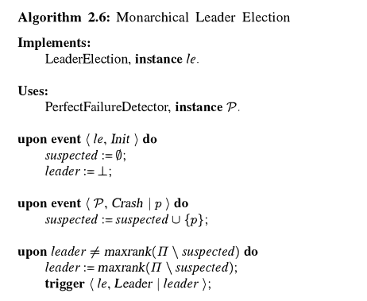
And here is the partial synchronous system verison of the above algorithms.
The Eventual Failure Detection algorithm in partial synchronous system is introduced. The
dedayvariable will increment a delta time, if there are suspected node in the alive list. Under the hook, this situation could only happen when the current node receives a reply message from the suspected node.If the algorithm didn’t receive the reply from specific node and it has not been suspected, then it will be appended to the suspected list. Else if the algorithm receive the reply from specific node and it has been suspected, then it will be removed from that list.
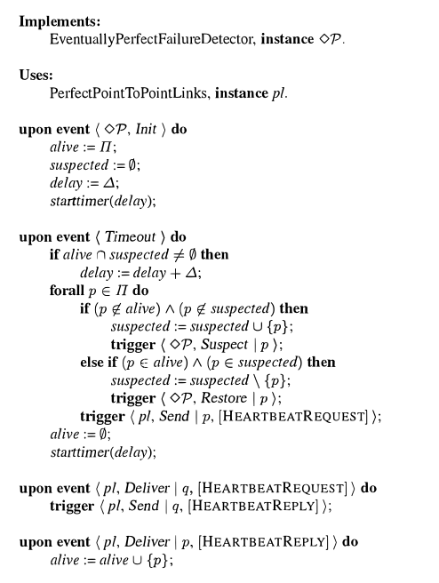
The Eventual leader election algorithm
the only diff between the Perfect Leader election algorithm is that, it uses the Eventual Failure Detection algorithm as the base.
Chapter 3: Reliable Broadcast
3.1 Regular Reliable Broadcast
Before we dive into the ralm of broadcast, the difference between broadcast and deliver should be clarified. While the first term means that the communication between the same layer, i.e. the peer nodes. And the deliver means that the message delivery to the upper layer of application inside the same node. Sometimes we may not want to immediately deliver the message once it is received, such as the agreement issue [see more on URB algorithm].
Best-Effort Broadcast (BEB)
In the module, there are only two methods, one for the sender
Broadcast, the other for the receiverDeliver, which is used to deliver the message to the other receiver.Regular Reliable Broadcast (RRB)
The limitation of BEB is that, the nodes may not agree on the delivery of the message: If the sender fails, some processes might deliver the message and others might not deliver it.
The semantics of a reliable broadcast algorithm ensures that the correct processes agree on the set of messages they deliver, even when the senders of these messages crash during the transmission.
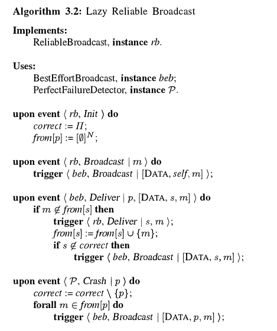
The most interesting line in the algorithm is
if s crashes during the broadcast,
then the node that receives its message will try to broadcast the message from here
In this way, there could be two possible cases:
During the broadcast, the sender keeps correct;
During the broadcast, the sender crashes. At this time, the receiver of the broadcast message will detect it and try to broadcast the message for the crashed.
It’s kind of like the search process of DFS algorithm.
And it is this situation that makes the message could be transmitted twice.
Uniform Reliable Broadcast (URB)
The limitation of RRB is that, the nodes may crash right after it re-broadcasts the message, and before it make the BEB to other nodes. In this case, the same problem from the BEB will occur.
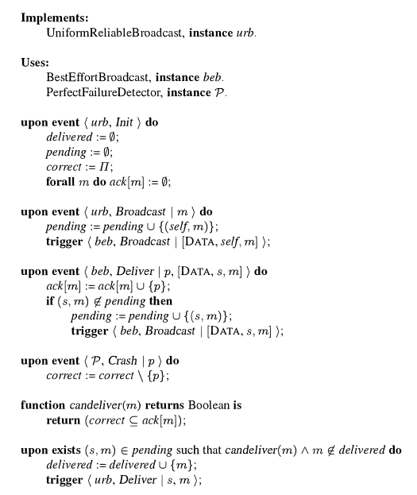
Once the difference between broadcast and deliver is awared of, we can know that the upon event <beb, Deliver | p, [DATA, s, m]> is the overloaded event from the BEB module. And in this case, the algorithm will not deliver the message to the upper layer once it is received. Actually, the data structure
ackwill be updated to record that the message has been broadcast to the nodep.Only when all the correct nodes have received the message, will the node deliver the message to the application layer.
3.2 FIFO and Causal Broadcast
Sometimes, the order of the messages in the broadcast matters.
FOFI-Order
A FIFO-order is one of the simplest possible orderings and guarantees that messages from the same sender are delivered in the same sequence as they were broadcast by the sender. Note, this does not affect messages from different senders.
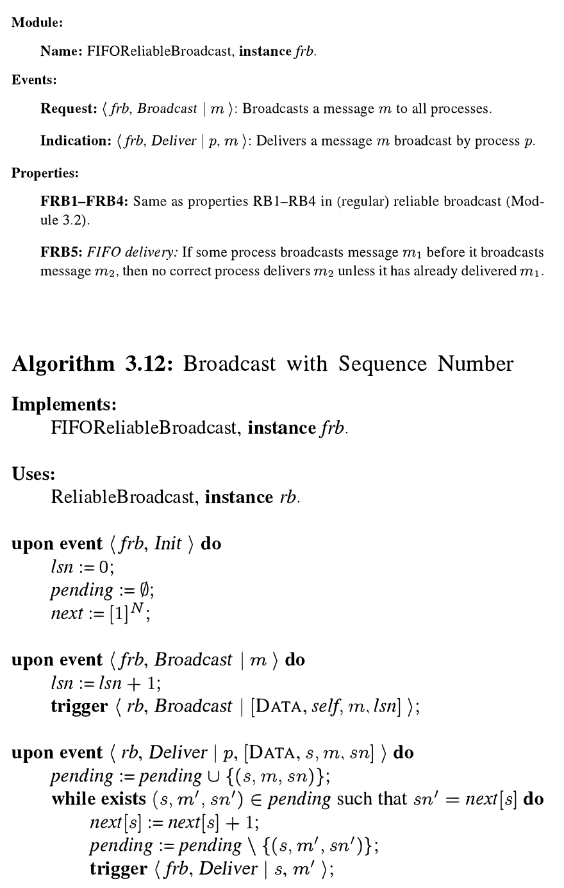
The key point is the sequence number
lsn. The process also maintains an arraynext, which contains an entry for every processpwith the sequence number of the next message to befrb-deliveredfrom senderp.Causal-Order
The causal order property for a broadcast abstraction ensures that messages are delivered such that they respect all cause-effect relations.
As is evident from the condition described above, a causal-order broadcast primitive provides also FIFO-order reliable broadcast.
no-waiting
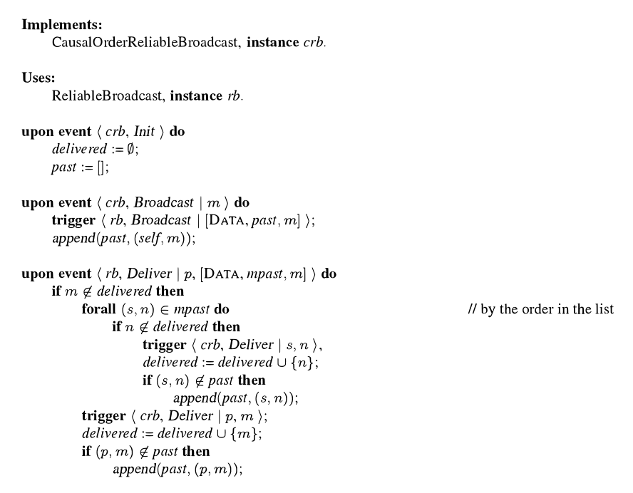
We call the algorithm no-waiting because whenever a process rb-delivers a message m, it crb-delivers m without waiting for further messages to be rb-delivered. Each message arrives to a node with the preceeding message ahead it. The receiver has to first crb-deliver the past messages, and after it finished, the current message could then be delivered. In order to disseminate its own causal past, each process p stores all the messages it has crb-broadcast or crb-delivered in a local variable past, and rb-broadcasts past together with every crb-broadcast message.
Garbage-Collection built upon no-waiting algorithm
This is a simple optimization of the “No-Waiting Causal Broadcast” algorithm to delete messages from the
pastvariable.When a process rb-delivers a message m, the process rb-broadcasts an ACK to all processes; when an ACK for m has been rb-delivered from all correct processes, then m is purged from past.
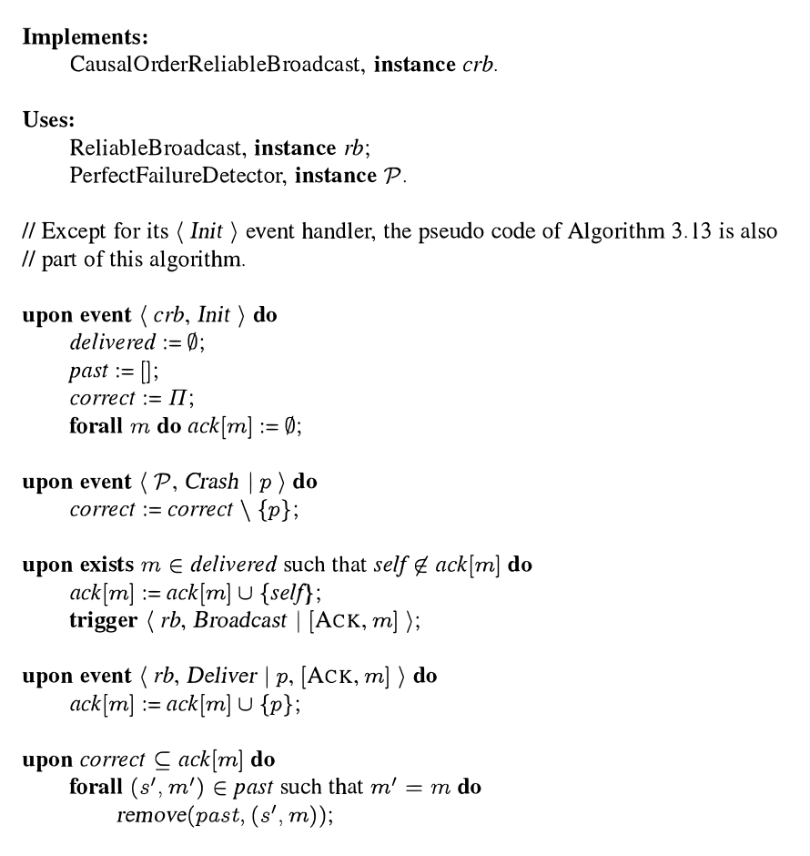
Chapter 4: Shared Memory
4.1 Regular Register
Specification
Only one process is allowed to write, and multiple processes could read at the same. We call this kind of register as (1, N) regular register.
It should satisfy the following properties:
- Read() will return the last value writted if there is no concurrent operation or failed operations;
- otherwise, the last value writted or any value concurrently written, i.e. the input parameter of some write() function call.
Algorithm
Here are two algorithm within the range of regular register
Fail-Stop Algorithm
Every process has its own copy of the register. When a writer makes changes to the shared register, it will first update all the other copy. Only when receiving ACK from all other correct processes, it will execute the WriteReturn call.
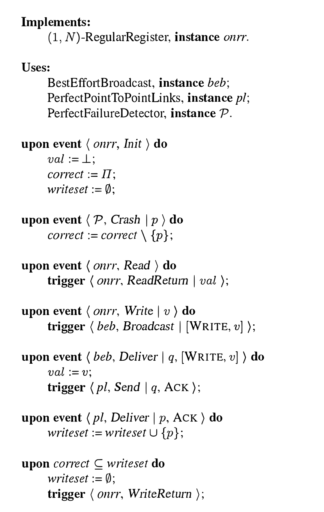
Fail-Silent Algorithm
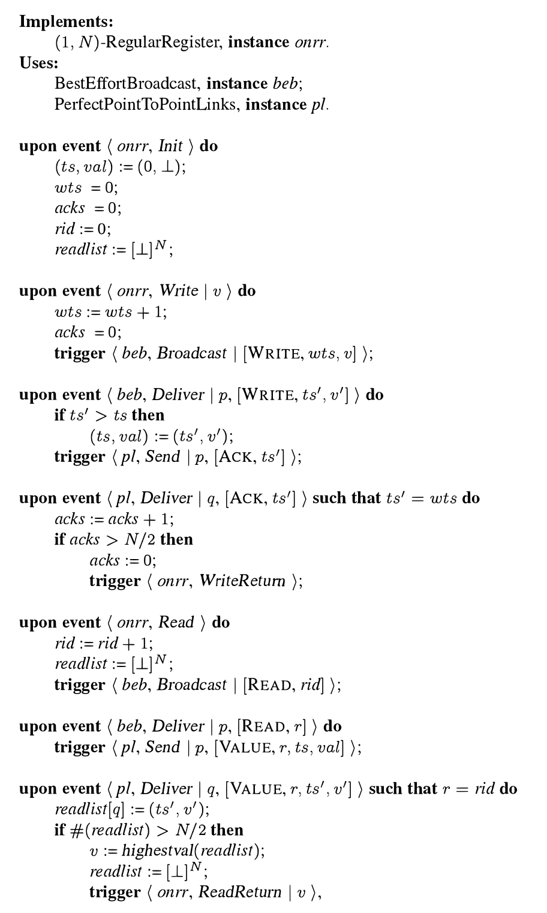
Writer will execute WriteReturn only when received majority ACK.
To read a value, a reader process beb-broadcasts a READ message to all processes, every process replies with the stored value and its timestamp, and the reader selects the value with the largest time stampt from a majority of the replies. The processes in this majority act as witnesses of what was written before. This majority does not have to be the same as the one used by the writer.
4.2 Atomic Register
Specification
Every failed (write) operation appears to be either complete or not to have been invoked at all
Every complete operation appears to be executed at some instant between its invocation and reply time events
In the testbook of 4.3.1 section, the author illustrates the reasons why the previous algorithms are not atomic, even if they are failure-free.
Atomic VS Regular
With one writer and no failed Write(),\ for a a regular register to be atomic, two successive Read()\ must not overlap a Write()\
This statement does not make any sense to me.
The regular register might in this case allow the first Read()\ to obtain the new value and the second Read()\ to obtain the old value
Algorithm
fail-stop (1, 1) atomic register
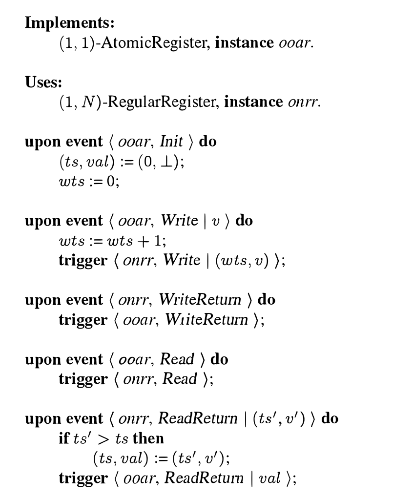
To ooar-write a value v to the atomic register, the writer p increments its timestamp wts and onrr-writes the pair (wts, v) into the underlying regular register.
To ooar-read a value from the atomic register, the reader q first onrr-reads a timestamp/value pair from the underlying regular register. If the returned timestamp ts’ is larger than the local timestamp ts, then q stores ts’ together with the returned value v in the local variables, and returns v. Otherwise, the reader simple returns the value from val, which it has already stored locally.
Remark: The key difference between the atomic register and the regular register is that, the value read from other peers is guaranteed to have a timestamp larger than or equal to the previous value read.
fail-stop (1, N) atomic register
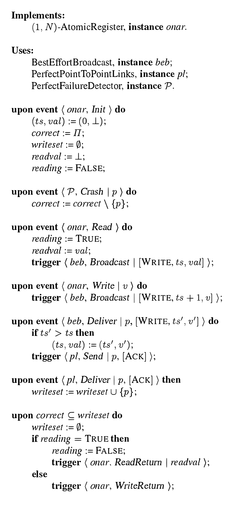
- Both write and read operations require N registers to be updated;
- And both write and read operations will update the local variable right now;
- The variable is guaranteed to be newer than before;
- limitation: we can’t not generalize this algorithm to (N, N) because we are considering one global register with one sequence number.
- Note that the read operation actually calls the beb-broadcast write operation with the current timestamp, which will not influence the newer value. In this case, the read operation will try to update other processes with their vaule before returning it.
fail-stop (N, N) atomic register
specification: An (N, N) atomic register is a strict generalization of a (1, N) register in the sense that every execution of a (1, N) atomic register is also an execution of an (N, N) atomic register, but not vice versa.
Process: First collect the largest timestamp, and then locate the variable with pid. Broadcast the tuple <timestamp, pid> when writing. Update the register based on the timestamp (as the first priority order) and a fixed order between processes (as the second priority order).
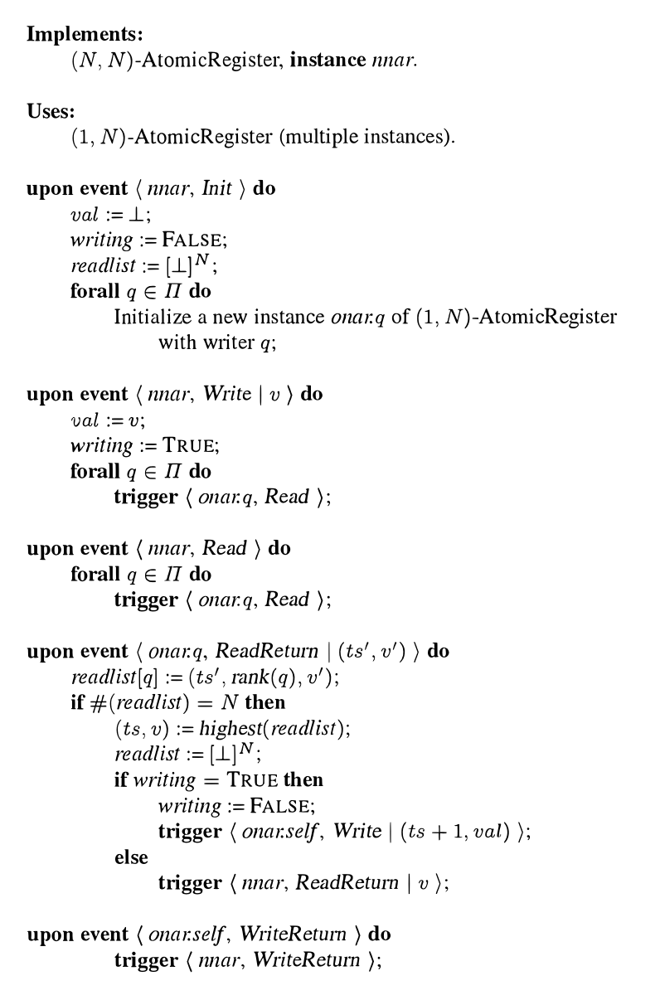
Key idea: To coordinate the writer so that they explicitly create a happened-before relation among the information they write, all teachers associate a global timestamp with every written value. When the writer first writes w, it will first read the shared register and finds v and an associated timestamp there. And then it will increment the ts and associates it with w, representing that w was written after v.
Reads will also try to update other processes with their value before returning it.
Chapter 5: Consensus
5.1 Specification
In the consensus problem, the processes propose value and have to agree on one among these values. Solving consensus is the key to solving many problems in distributed computing.
- Regular consensus
- Validity: Any value decided is a value proposed before.
- Agreement: No two correct processes decide differently.
- Termination: Every correct process eventually decides.
- Integrity: No process decides twice.
- Uniform consensus
- Validity: Any value decided is a value proposed.
- Uniform Agreement: No two processes decide differently. [even failed process should have the correct consensus]
- Termination: Every correct process eventually decides
- Integrity: No process decides twice.
5.2 Algorithm
5.2.1 P-based regualr consensus algorithm
Key idea: The “Hierarchical Consensus” algorithm works in rounds and relies on a best-effort broadcast abstraction and on a perfect failure detector abstratction. In ruond i, the process p with rank i decides its proposal and broadcasts it to all processes in a DECIDED messgae. All other processes that reach round i wait before taking any actions, until they deliver this message or until detector detects the crash of p. No other process than p broadcasts any message in round i. A process collects the ranks of the processes detected to have crashed by detector in a variable detectedranks.
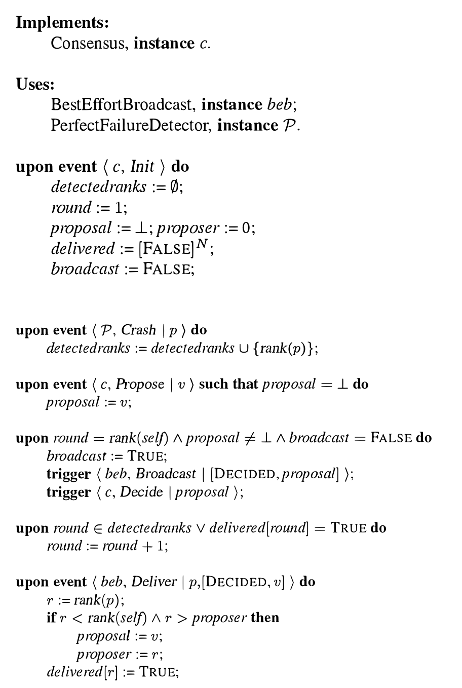
5.2.2 P-based uniform consensus algorithm
Key idea: Don’t let a process decide and then crash before imposing its value on everyone. The correct process may be the last one. Therefore, we delaying the decision to the last round. The processes exchange and update proposal in rounds, and after n rounds decide on the current proposal value.
The processes go through rounds incrementally (1 to n): in each round i, process pi sends its currentProposal to all. A process adopts any currentProposal it receives.
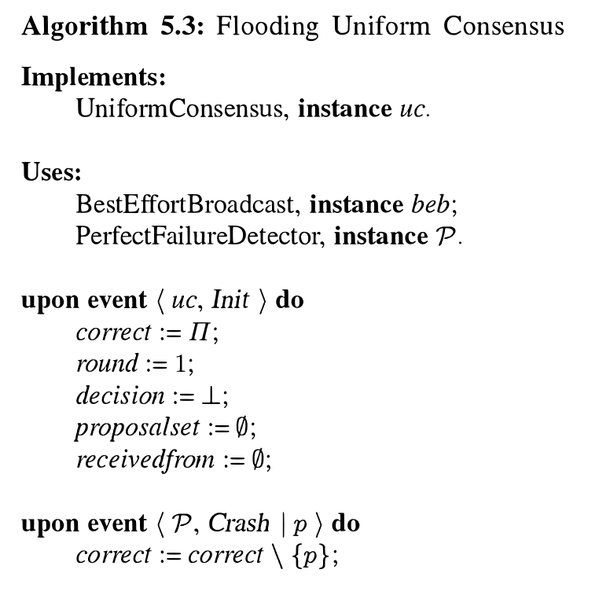
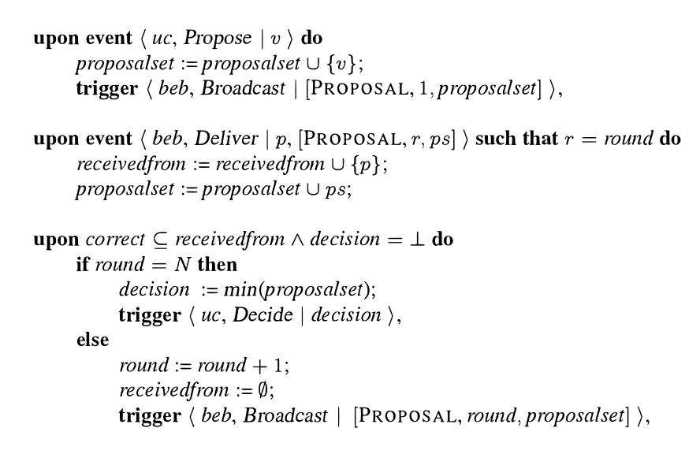
5.2.3 <>P-based uniform consensus algorithm
We introduce two abstractions to build our fail-noisy consensus algorithm. The first one is epoch-change primitive that is responsible for triggering the sequence of epochs at all processes. The second one is an epoch consensus abstraction, whose goal is to reach consensus in a given epoch. Since one epoch might be aborted, the consensus algorithm will invoke multiple epoch consensus instances in sequence, governed by the outputs from the epoch-chage primitive.
<>P-based is the eventually perfect failure detector, which ensres 1. Strong completeness (eventually every process that crashes is permanently suspected by all correct processes) 2. eventual strong accuracy (eventually no correct process is suspected by any process)
Epoch-Change
A fail-noisy model, relying on an eventual leader detector.
The epoch-change abstraction signals the start of a new epoch by triggering a
event, when a leader is suspected. Apart from the implicit initialization, the epoch-change abstraction receives no requests. 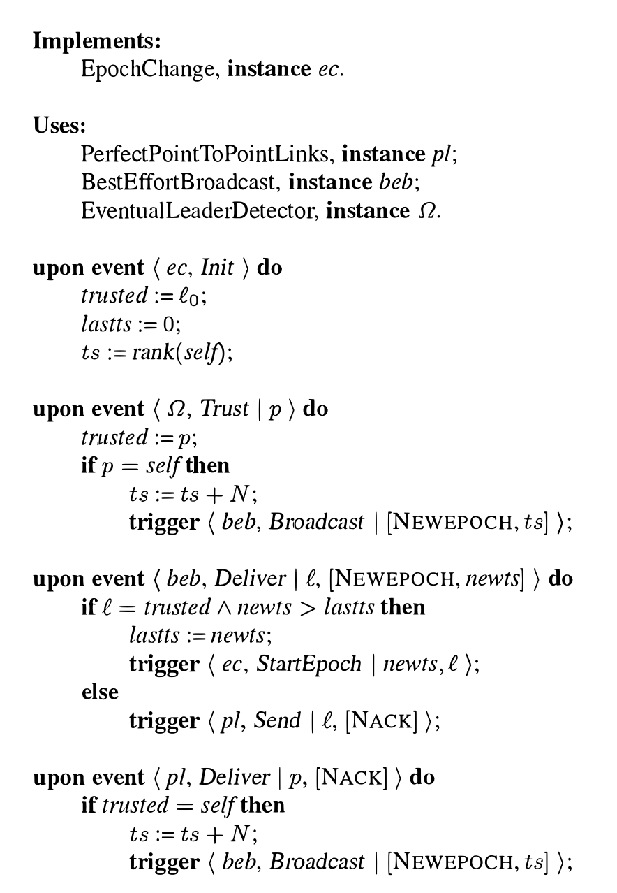
Every process p maintains two timestamps:
lasttsof the last epoch that it started, andtsof the last epoch that it attempted to start with itself as leader.Initially, the process sets
tsto its rank. Whenever the leader detector subsequently makes p trust itself, p adds N to ts and sends a ENWEPOCH message with ts. When process p receives a NEWEPOCH message with a parameter newts > lastts from some process l and p most recently trusted l, then the process triggers aevent with parameters newts and l. Otherwise, the process informs the aspiring leader l with a NACK message that the new epoch could noe be started. In a word, when omega (eventual leader detector) indicates a different leader is trusted, the process will increment timestamp, broadcast a NEWEPOCH message; when delivering a NEWEPOCH message, the process will trigger the start of a new EPOCH.
Epoch Consensus
A fail-silent model, provided only that a majority of the processes is correct.
It only represents an attempt to reach consensus; epoch consensus may not terminate and can be aborted when it does not decide or when the next epoch should already be started by the higher-level algorithm.
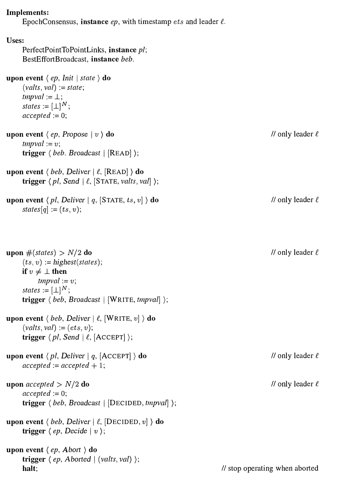
By combining the above two module together, we can finally device the fail-noisy algorithm: Leader-Driver Consensus.
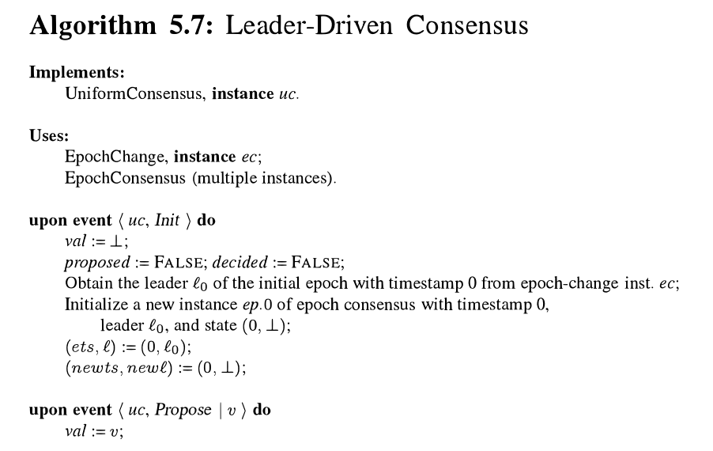
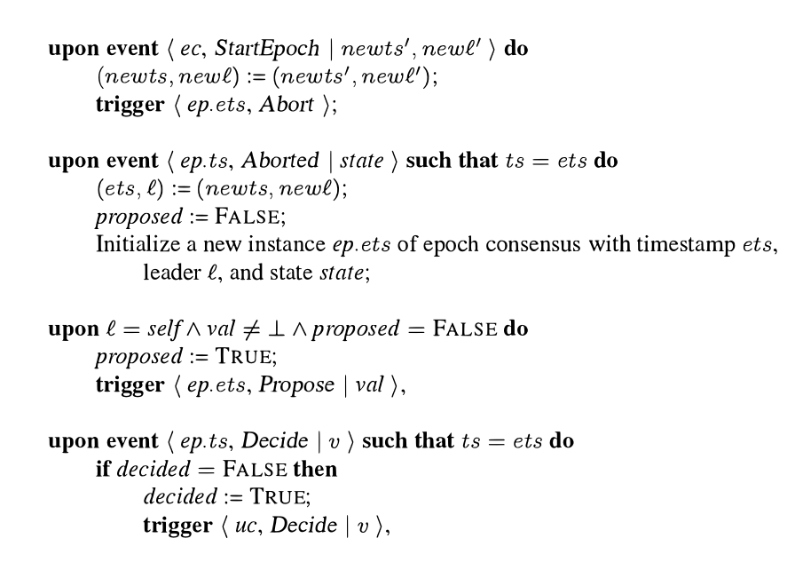
Terminating Reliable Broadcase
Why would other processes would not deliver the messgae when the source sender crashes int Uniform Reliable Brodcast?